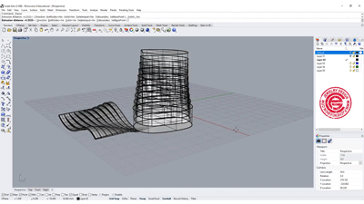
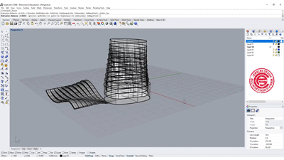

Final Project Proposal!
 

Tween Curve Candles!
Building on my experiments with candles and Vonoroi, I'd love to experiment with tween curves to make molds for candles that could be fun gifts. I'd use Rhino, Grasshopper definitions, 3d print and then cast in wax! I've purchased wax and pitcher, so I'm ready to start! I'm referencing a Youtube video from PJ Chen Jewelry Design linked above. For stretch goals, I'll purchase 15lbs pf plaster, a glue gun and small magnets.